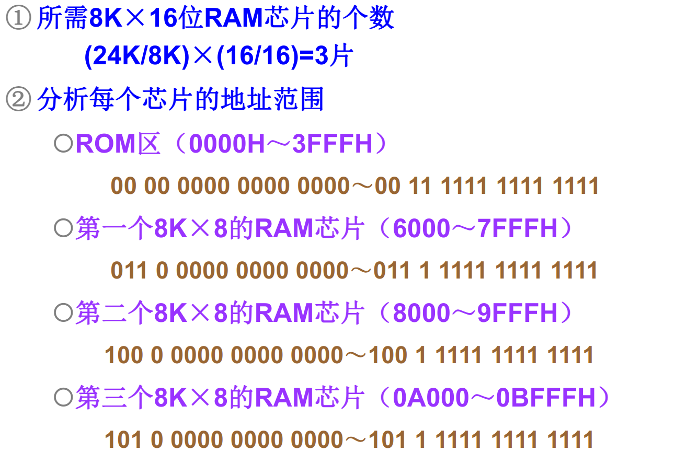
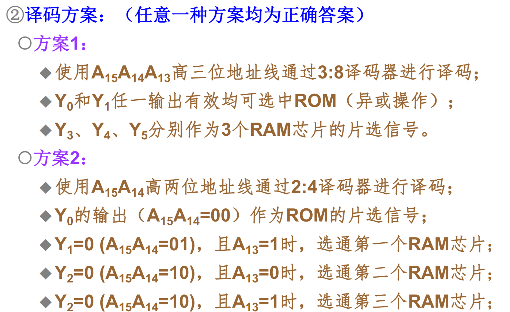
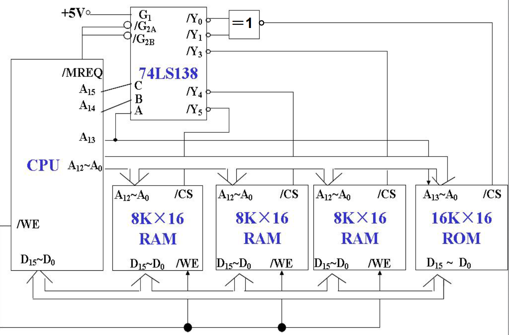
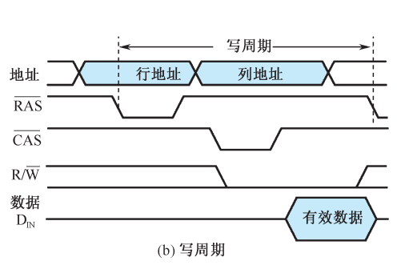
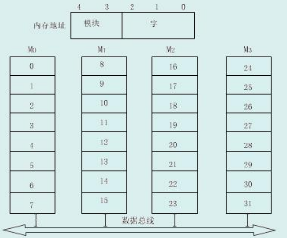
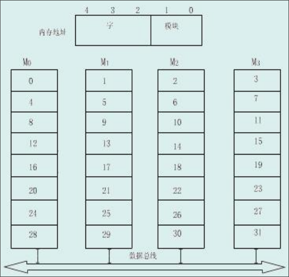
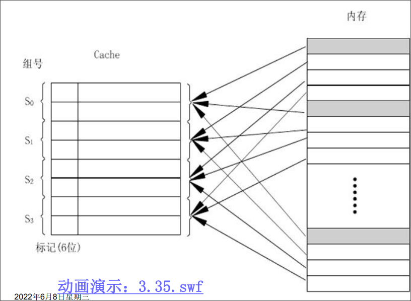

存储系统
存储器概述
存储器分类
按存储介质分类：
- 半导体存储器：使用MOS管组成的存储器
- 磁表面存储器：使用磁性材料做成的存储器
- 光盘存储器：使用光介质构成的存储器
按存取方式分：
-
随机存储器：存取时间和存储单元的物理位置无关：比如半导体存储器
-
顺序存储器：存取时间和存储单元的物理位置有关：比如磁盘存储器
-
半顺序存储器：存取时间部分依赖于存储单元的位置：硬盘
按照存储内容可变性分：
- 只读存储器
ROM - 随机读写存储器
RAM
按信息易失性分：
- 易失性存储器：断电后信息即消失的存储器
- 非易失性存储器：断电后仍能保存信息的存储器
按在计算机系统中的作用：
-
主存储器：能够被CPU直接访问，速度较快，用于保存系统在当前运行所需的所有程序和数据。一般情况下使用半导体存储器实现。
-
辅助存储器：不能被CPU直接访问，速度较慢，用于保存系统中所有的程序和数据。
-
高速缓冲存储器：能够直接被CPU访问，速度快，用于保存系统当前运行中频繁使用的程序和数据。
-
控制存储器（寄存器）：CPU内部的存储单元。
存储器的分级结构
计算机对存储器的要求：大容量、高速度和低成本。为了解决这个问题，提出了计算机的分级存储结构。
计算机中有着三级存储结构：
缓存——主存结构
主存——辅存结构
- 加上缓存
cache的目的是提高速度 - 内存包括缓存和主存
- 多层次的存储结构降低了成本，提高了容量
但是采用分级结构需要解决一些问题：
- 从辅存中寻找指定的内容放入主存应该如何定位？
- 当CPU访问缓存而需要的内容并不在缓存中，应该如何处理？
以上的问题由操作系统解决
主存储器的技术指标——存储容量
存储容量：存储器中能存放的二进制代码总量
主存储器的技术指标——存储速度
存取时间：从启动一次访问操作到完成该操作为止所经历的时间。一般以ns为单元，分为读出时间和写入时间。
存取周期：存储器连续启动两次独立的访问操作所需的最小间隔时间。以ns为单元。
存储器带宽：单位时间能够读取或者写入的数据量。
存储器容量的扩充
单个存储芯片的容量有限，实际存储器由多个芯片扩展而成。
SRAM、DRAM、ROM均可以进行容量扩充
存储器同CPU的连接
数据、地址、控制三个总线的连接。
那么多个存储芯片同CPU之间的连接应该如何处理？
-
首先不是一一对应连接
-
关注存储器和CPU的外部引脚
-
存储器的容量扩充
存储芯片与CPU的引脚
存储芯片的外部引脚：
-
数据总线：位数和存储单元的字长相同，传输数据信息
-
地址总线，位数和存储单元的个数为关系，用于选择存储单元
-
读写信号
WE：决定当前对芯片的访问类型 -
片选信号
CS：决定当前芯片是否正在被访问
CPU与存储器连接的外部引脚：
- 数据总线：位数和机器字长相同，用于传输数据信息
注意：机器字长和存储单元的字长不一定一致。机器字长往往是存储单元字长的整数倍
-
地址总线：位数与系统中可访问单元个数为的关系，用于选择访问单元
-
读写信号
WE：决定当前CPU的访问类型 -
访存允许信号
MREQ：内存控制器决定是否允许CPU访问内存
存储器容量的位扩展
存储单元数量不变，每个单元的位数增加。
例：将1Kx4的存储器芯片扩展为1Kx8的存储器芯片：
将地址线增加为原来的两倍，将前四根分配给第一个存储芯片，后四根分配给第二个存储芯片。即：
-
各芯片的地址线直接和CPU的地址线相连
-
各芯片的数据线分别和CPU数据线的不同位相连
-
片选信号和读写线直接和CPU的对应接口相连接。
CPU对存储器的访问是对所有扩展芯片的同一单元的同时访问。
存储器的字扩展
每隔单元的位数不变，但是总的单元个数增加。
例如，使用1Kx8的存储芯片构成2Kx8的存储器：
-
各芯片的地址线和CPU的地位地址线相连
-
数据线和CPU的数据线直接相连
-
读写线直接和CPU的读写线
-
片选信号：片选信号由CPU地址的高位地址和访存信号产生
CPU对于存储器的访问是对于某个扩展芯片的一个单元的访问。
存储芯片的字位扩展
每隔存储单元位数和总的单元个数都会增加。
-
首先进行位扩展，得到满足位要求的存储芯片组
-
再使用存储芯片组进行字扩展
因此，需要计算出需要的存储芯片个数。
如果需要利用的芯片构成的存储系统，需要的芯片个数为：
存储器容量扩展例题




SRAM存储器概述
SRAM: static Random Access Memory
主存储器的构成
-
SRAM：由MOS电路构成的双稳态触发器保存的二进制信息。
优点：访问速度快，不掉电可以永久保存信息
缺点：集成度低，功耗大，价格高
-
DRAM：用MOS电路中的栅极电容保存二进制信息
优点：集成度高，功耗低，价格低
缺点：访问速度慢，电容的放电作用会使信息丢失，需要定期刷新
可以分为SDRAM，DDR SDRAM。
基本的静态存储元阵列
基本存储元：由6个MOS管组成，可以存储一位信号。
基本存储元组成存储阵列，但是不一定完全完全按照存储单元形式组织
在封装完成之后，阵列会引出三种控制线
- 地址线：确定需要读写的存储单元
- 数据线：输入输出需要读取写入的数据
- 控制线：控制是读取还是写入
地址线的译码方式有两种：
- 单译码：地址由一根地址线直接指定
- 双译码：地址线由两根地址线共同制定
SRAM存储器的组成结构：
-
存储体：存储单元的集合，将各个存储元组成一个存储矩阵。大容量存储器中，通常使用双译码的方式来确定存储单元。
-
地址译码器：将CPU发出的地址信号转换为确定存储单元的信号
-
驱动器
-
片选：确定当前芯片是否被CPU选中
-
读写电路：读写选定的存储单元
读写周期波形图
存储器读写原则：
- 读写信号要在地址信号和片选信号起作用，经过一段时间之后才有效
- 读写信号有效期间不允许地址、数据发生变化
- 地址、数据要维持整个周期内有效
读周期操作过程：
- CPU发出有效的地址信号
- 译码电路产生有效的片选信号
- 读信号控制下，从存储单元中读出数据
- 各个控制信号撤销，数据维持一段时间
读出时间：从地址有效到外部数据总线上数据信号稳定的时间
片选有效时间：从片选信号有效到数据信号稳定的时间
读出信号有效时间：从读出信号到数据信号稳定的时间

写周期操作过程：
- CPU发出有效的地址信号，提供需要写入的数据
- 译码电路延迟产生有效的片选信号
- 写信号控制下，数据写入存储单元中
- 控制信号撤销，数据维持一段时间

DRAM存储器
DRAM存储器必须定时刷新，维持其中的信息不变。
DRAM的存储元是MOS管和电容组成的记忆电路，利用电容中的电量来表示存储的信息。
DRAM存储元的记忆原理
利用MOS管控制对于电容的充放电，利用电容中的电量来表示存储的信息。
行线（字线）控制MOS管的开关，位线读出电容中的数据。
DRAM控制电路的组成
- 地址多路开关：刷新时需要提供刷新地址，非刷新时提供读写地址
- 刷新定时器：定时进行刷新操作
- 刷新地址计数器：刷新按行进行，对所要刷新的行进行计数
- 仲裁电路：对CPU访问存储器的请求和刷新存储器的请求优先级进行仲裁
DRAM的读写周期
读时序为：
- 行地址信号有效
- 列地址有效
- 读写信号置为读信号
- 输出信号有效

写时序：
- 行地址信号有效
- 列地址有效
- 读写信号置为写信号
- 输入信号有效

DRAM的刷新周期
在固定的时间内对所有的存储单元，通过读取——写入的方式恢复信息的操作过程，刷新过程中不可进行读写操作。
DRAM的刷新有着以下几种方式：
- 集中式刷新：在一个刷新周期内，利用一段固定时间对存储矩阵中的所有行逐一刷新，在此期间停止所有的读写操作
- 分散式刷新：将系统工作周期分成两部分，前半部分用户读写操作，后半部分用于存储器的刷新
- 异步式刷新：计算需要刷新的频率，在需要刷新的时候再进行刷新操作
ROM存储器
掩模式ROM：数据在芯片制造的过程中写入，不能更改
-
优点：可靠，集成度高，价格比较低
-
缺点：通用性差，不能改写
一次编程ROMPROM:用户第一次使用时写入确定内容
-
优点：用户可根据需要对ROM进行编程
-
缺点：只能编程一次
多次编程ROM：可用紫外光照射EROM或者电擦除EEPROM，多次改写其中的内容
- 优点：通用性好，可反复使用
闪存存储器Flash：一种高密度，非易失性的读写半导体存储器，即常用的U盘
高速存储器
双端口存储器
双端口存储器采用空间并行技术，同一个存储体使用两组相互独立的读写控制线路，可并行操作。
读写特点：
- 无冲突读写：访问不同的存储单元，可以并行读写存储体
- 有冲突读写：访问同一存储单元，通过特定的信号控制读写的先后顺序
多模块交叉存储器
多模块交叉存储器采用时间并行技术。
存储器的有两种模块化的组织方式：
-
顺序方式
每个模块中的单元地址是连续的。某个模块在进行存取的时候，其他模块不工作，某一模块出现故障，其他模块可以照常工作。
存储单元的地址就可以分成两部分：高位是模块号，低位是模块内的字号。

-
交叉方式
每个模块的单元地址是不连续的，连续地址分布在相邻的不同模块内。对于数据的成块传送，各模块可以实现多模块流水式并行存取。
存储单元的地址恰好和顺序方式相反：低位是模块号，高位是模块内的字号。

Cache存储器
Cache的基本原理
由于CPU的运算速度越来越快，主存储器的速度和CPU之间的差距越来越大。
基于程序访问的局部性原理，即在一段时间内，CPU所执行的程序和访问的数据大部分都在某一段地址范围内，而在该段范围之外的地址访问很少，在CPU和主存之间加一块高速的SRAM，称为Cache。将主存中将要被访问的数据提前送到缓存中，CPU在访问数据中，优先在缓存中寻找，如果没有命中再到主存甚至更低的存储层次中寻找。
缓存在实现过程中使用结构模块化的思想。CPU访问Cache或者主存时，以字为单位，当Cache和主存交换信息时，以块/行为单位，一次读入一块或者多块内容。此部分完全由硬件实现，对程序员透明。
缓存由以下的几个部分组成：
- 存储体，基本单位为字，若干个字构成一个数据块
- 地址映射变换机构：用于将主存地址变换为缓存地址，以利用CPU发送的主存地址访问缓存
- 替换机构：更新缓存中数据时使用的机制
- 相联存储器，缓存的块表，快速指示所访问的信息是否在缓存中
- 读写控制逻辑
缓存的读操作大致会经过以下几个步骤：
-
CPU发出有效的主存地址
-
经过地址变换机构，成为可能的缓存地址
-
查找块表，判断访问的信息是否在缓存中
-
如果在，CPU直接读取缓存获得数据
如果不在，CPU访问主存，并判断缓存是否已满。如果缓存未满，将该数据所在块放入缓存中，如果缓存已满，使用某种替换机制，使用当前数据块替换缓存中的某些块
缓存的写操作：
-
CPU发出有效的主存地址
-
经过地址变换机构，称为可能的缓存地址
-
查找相联存储器，判断访问的信息是否在缓存中
-
如果不在，则CPU直接写入主存
如果不在，使用某种写策略将数据写入缓存
判断缓存性能由两个指标：
- 命中率：CPU要访问信息在缓存中的比率
- 主存系统的平均访问时间
“cache-主存系统的效率”：用来衡量，通常为百分比，越接近100越好
主存到缓存中的地址映射
全相联映射
主存中的任意字块可调进缓存中的任一行中。
使用这种方式的块表就是缓存行号和主存块号的对应表，因此块表的大小就是缓存中行的数量乘以主存块号的长度。

这种方式的优点是灵活性号，在缓存中只要存在空行，就可以调入所需要的主存数据块。
缺点比较多：
- 成本高，标记需要的位数比较多，使得缓存的标记容量变大
- 速度慢，访问缓存时需要同所有的标记进行比较，才能判断出所需要的数据是否在缓存中
直接映射
主存中的每一块数据只能调入缓存的特定行中。
有点类似于将缓存当作一个哈希表来使用：如果主存的块号为i，缓存的行数为c，那么主存当前行号对应的缓存行号为：

直接映射的优点是映射函数的实现简单，查找速度快，但是灵活性差。
组相联映射
组相联映射是直接映射和全相联映射的一种折中方案。
将缓存中的行等分为若干组，主存中的每一块只能映射到缓存中的特定组中，但是可调入该组中的任一行中。也就是组间为直接映射，组内为全相联映射。
一般上缓存中的一组含有r行时，称为r路组相联映射。

缓存的替换策略
-
最不经常使用算法
LFU将一段时间内被访问次数最少的那行数据替换出去。
为每行设置一个计数器，每访问一次，被访问行的计数器自增，当需要替换时，将计数值最小的行换出，清空计数器。
缺点：这种算法将技术周期限制在对这些特定行的两次替换中，不能严格反映近期访问情况
-
近期最少使用算法
LRU将近期内长久未使用的行替换出去。
为每行设置一个计数器，没访问一次，将被访问行的计数器清空，其他行自增。在需要替换时，将计数器最大的行替换出去。
这种方式保护了刚进入缓存的新数据行，效率高。
-
随机替换算法
随机选一行替换。
在硬件上容易实现，速度也快，但是命中路和工作效率低。
缓存的写策略
修改缓存中的内容之后，需要将数据写入主存中保存起来。
-
写回式
只修改缓存中的内容，不立即写入内存，只有当该行被替换时才写入内存。
减少了访问内存的次数，但是存在缓存和主存不一致的问题。且需要设置一个标志位，标识这个行是否被修改过。
-
全写式
缓存和主存同时发生写修改，维护缓存和主存的一致性。
缓存的功效被降低，但是实现简单。
-
写一次式
基于写回法，但是结合了全写法的特点。
在第一次写命中的时候，写入主存。
第一次写命中时，启动一个主存的写周期，目的是其他缓存可以及时更新或者废止该块内容。
虚拟内存
别的班都讲了在复习，就我们没有讲。赌一把它不考
https://zhuanlan.zhihu.com/p/498675124